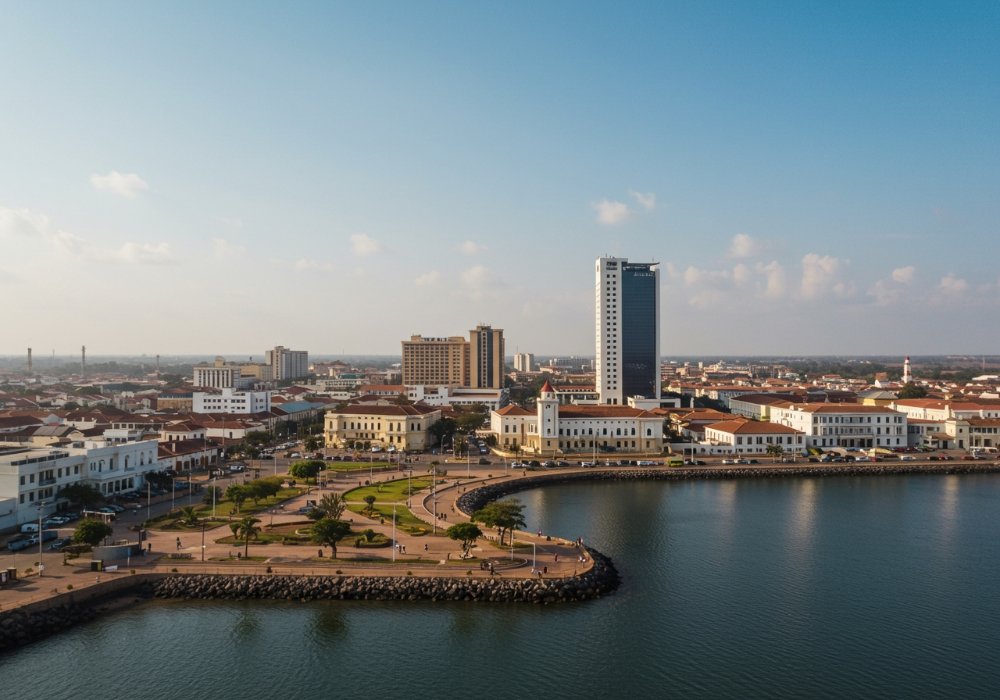

Uíge
Uma província do norte de Angola, reconhecida pela sua riqueza agrícola, florestas, história e tradições culturais.

Sobre a Província
Uíge está localizada no norte de Angola e tem como capital a cidade do Uíge. A província apresenta paisagens verdes, rios, florestas e uma população com uma forte ligação às tradições locais.
História
A história do Uíge está ligada aos antigos povos do Reino do Kongo e às comunidades que habitaram a região. A província também teve importância nos acontecimentos ligados à luta pela independência de Angola.
Economia
A agricultura é uma das principais atividades económicas da província. Destacam-se culturas como o café, a mandioca, o milho e a banana. O comércio e a pecuária também contribuem para a economia local.
Cultura e Tradições
O Uíge possui uma cultura rica, marcada pelas tradições dos povos Bakongo. A música, a dança, as línguas nacionais, a gastronomia e as cerimónias tradicionais fazem parte da identidade da região.
Património Natural
A província possui florestas, rios e paisagens naturais que favorecem a agricultura e oferecem potencial para o turismo e a conservação ambiental.
Identidade
Uíge representa uma parte importante da identidade angolana. A sua história, tradições, riqueza agrícola e diversidade cultural contribuem para o património nacional.